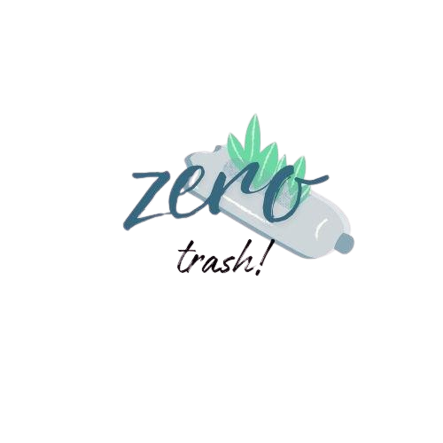

Clean Batam, Win Rewards
Hadiah dari Aksi Kebersihanmu
Platform interaktif yang mendorong warga Kota Batam
untuk berpartisipasi aktif dalam menjaga kebersihan
lingkungan dengan memberikan hadiah sebagai
insentif atas kontribusi mereka.
Pembuangan Limbah Berbahaya
Pengumpulan di Tempat
Pembuangan Sampah
Penyewaan Tempat Pembuangan Sampah
Pengomposan
Daur Ulang Limbah Elektronik
Analisis Aliran Limbah
Sistem Pengelolaan Terintegrasi
ZeroTrash menyediakan layanan berbasis teknologi yang mempermudah proses pengelolaan sampah
Penghargaan yang Mendorong Partisipasi
Memberikan insentif berupa poin yang dapat ditukar dengan hadiah untuk mendorong masyarakat konsisten dalam pengelolaan sampah.
Fokus pada Edukasi dan Kesadaran Lingkungan
Melalui kampanye dan program edukasi, ZeroTrash membantu masyarakat memahami pentingnya daur ulang dan pengelolaan sampah yang efektif
Tentang Kami
Pakar Terpercaya dalam Pengelolaan Sampah dan Daur Ulang
ZeroTrash hadir sebagai solusi inovatif dalam pengelolaan sampah di Kota Batam. Kami berkomitmen untuk menciptakan perubahan nyata dengan memberdayakan masyarakat, mengintegrasikan teknologi, dan memperkenalkan praktik pengelolaan sampah yang efisien dan berkelanjutan. Sebagai platform yang menghubungkan masyarakat dengan layanan pengelolaan sampah, ZeroTrash menjadi mitra terpercaya dalam menciptakan kota yang lebih bersih dan ramah lingkungan.
- Sistem Digital Terpadu
- Penghargaan Berbasis Poin
- Fokus pada Edukasi dan Kesadaran Lingkungan
Layanan Sampah
Penukaran Sampah dengan
Poin.
Daur Ulang
Daur Ulang dan Pengolahan
Sampah.